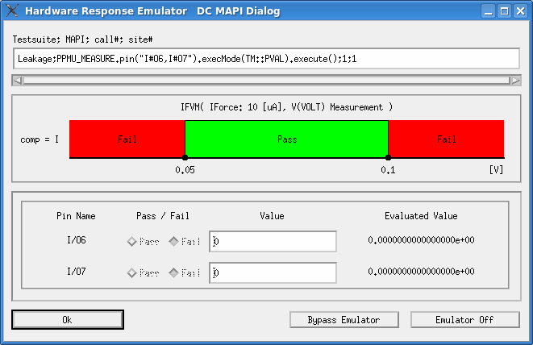

DC API type
The Hardware Response Emulator DC MAPI Dialog window opens when the
execute() member function of the following DC APIs is executed offline using the
emulator in "Store" mode:
PMU_IFVM(pinlist);PMU_VFIM(pinlist);DPS_VFIM(pinlist);PPMU_MEASUREDPS_TASK.execute();SPMU_TASK.execute();
In this dialog, you can specify the result of the getPassFail(),
getPassFail(pin) or getValue(pin) member function of the above
APIs.

To specify user-provided data in this dialog:
- Select the Pass or Fail option for each pin.
These selections correspond to the pass/fail result of the DC measurement for each pin, and is
returned as a result of the
getPassFailmember function. - If you retrieve the measurement values with the
getValuemember function, specify the values in the Value field for each pin. - Click OK to save the specified data in the hardware response file in the hardware response directory.
Testsuite; MAPI; call#; site# |
This field displays the test suite name and test method API that takes the hardware response data specified in this dialog. The expression in this field is similar to the one in ARRAY_X type. |
Pass/Fail |
This field specifies the per-pin pass/fail result for the
|
Value |
This field specifies the result value for the |
OK |
Same as for ARRAY_X type. |
Bypass Emulator |
|
Cancel Emulator |
Functional changes
- Introduced before SmarTest 6.3.2